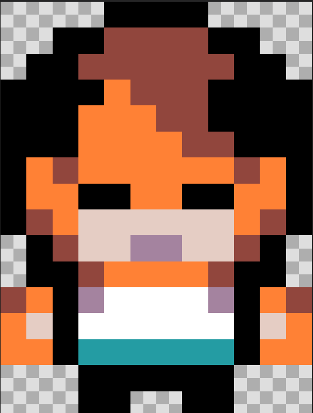
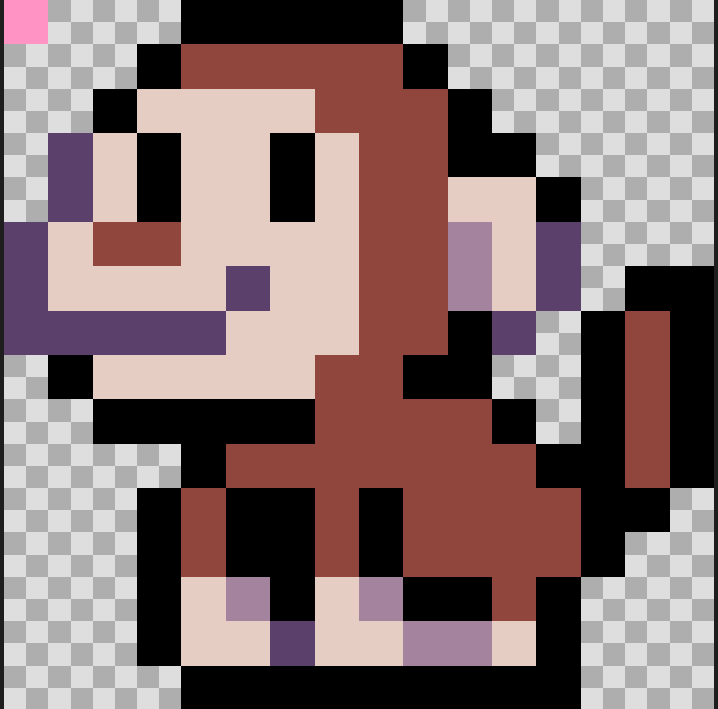
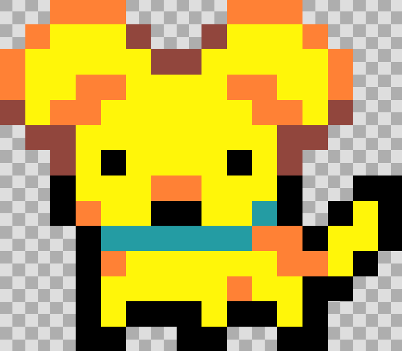
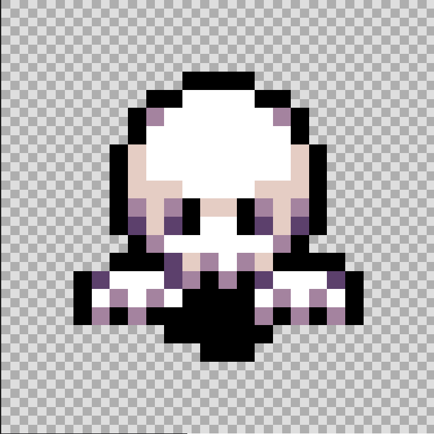
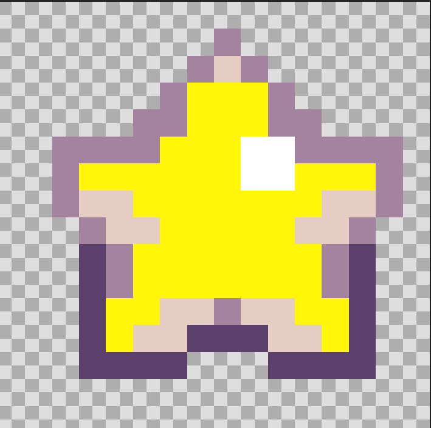
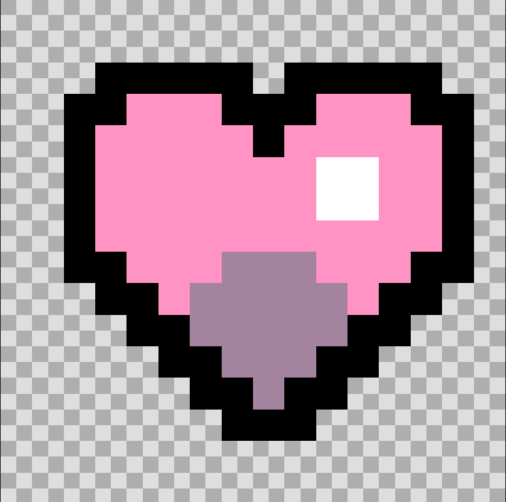
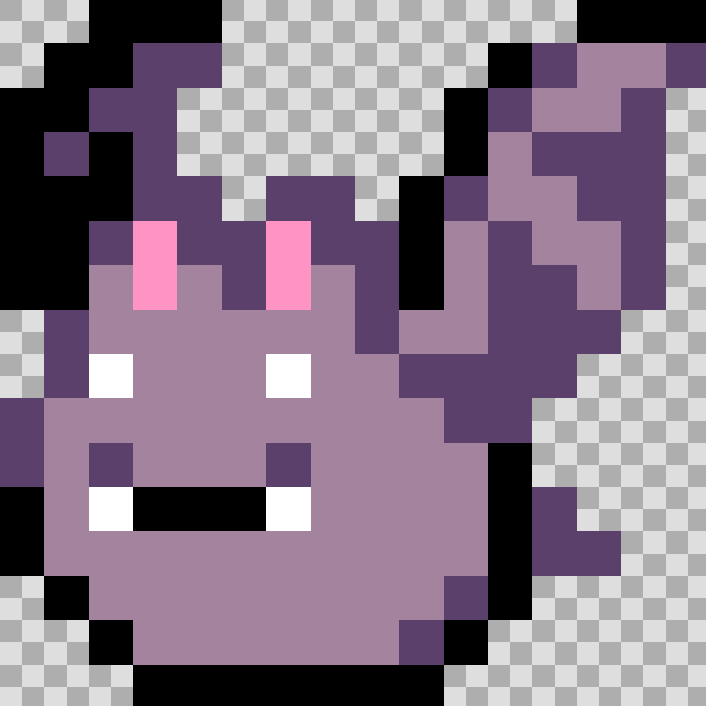
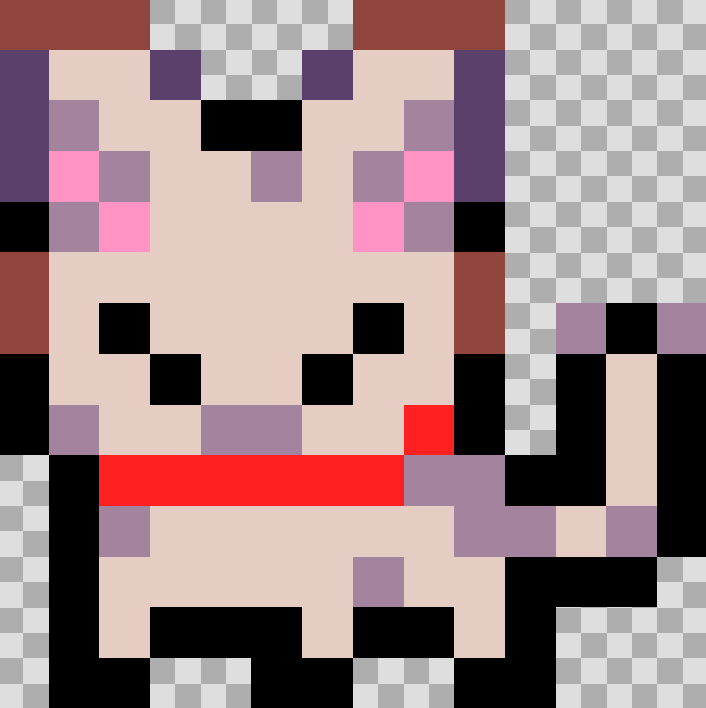
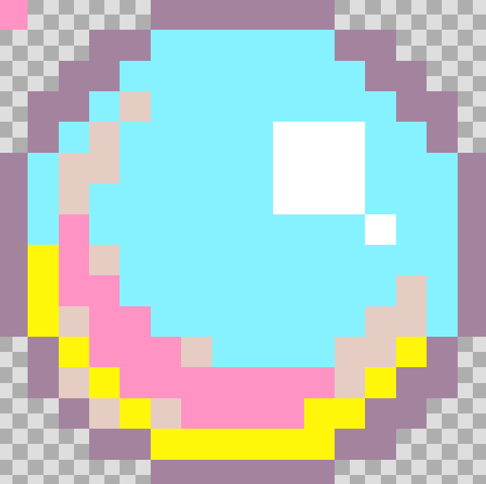

| Izena | Argazkia | Azalpena |
|---|---|---|
| Pertsonai nagusia |  |
Hau nire pertsonai nagusia da, tipo player-ekoa eta egiten duena da, etsaiak hil eta puntuak irabazi irabasteko. |
| Tximinua |  |
Tximinua izeneko etsaia da, pertsonai nagusiari ikutzea eta bizitzak kentzea da bere helburua. |
| Txakurra |  |
Txakurra izeneko etsaia da, pertsonai nagusiari ikutzea eta bizitzak kentzea da bere helburua. |
| Mamua |  |
Mamua izeneko etsaia da, pertsonai nagusiari ikutzea eta bizitzak kentzea da bere helburua. |
| Mamu Gorria |  |
Mamu gorria izeneko etsaia da, pertsonai nagusiari ikutzea eta bizitzak kentzea da bere helburua. |
| Izarra |  |
Izarra izeneko janaria da, hauek lehenengo mapan agertzen dira eta pertsonai nagusiak hartu behar ditu puntuak lortzeko. |
| Bihotza |  |
Bihotza izeneko objetua food motako objetu bat da, bere helburua Pertsonai nagusiari bihotz bat gehitzea edo ematea da, pertsonai nagusia errexago irabazi ahal izateko. |
| Bloke Urdina |  |
Bloke urdin honetan, lehenengo eta bigarren mapan jarrita daude, beraien helburua da, pertsonai nagusia ikutzen edo zapaltzen duenean eta etsai bat ikutzen badio, ikutu duen tokitik berriro azaltzea. Check point bat bezala da. |
| Bola Gorria |  |
Bola gorrri hau, lehenengo maparen behean azaltzen da, beraien helburua da, pertsonai nagusia puntu denak hartzerakoan, bolita gorriak ikutzea eta bigarren mapara joango da. |
| Saguzarra |  |
Saguzarra izeneko etsaia da, pertsonai nagusiari ikutzea eta bizitzak kentzea da bere helburua. Saguzar hau bigarren mapan azalduko da eta statusbar bat dauka, jolasa entretenigarria izateko. |
| Katua |  |
Katua izeneko etsaia da, pertsonai nagusiari ikutzea eta bizitzak kentzea da bere helburua. |
| Burbuila |  |
Burbuila izeneko janaria da, hauek bigarren mapan agertzen dira eta pertsonai nagusiak hartu behar ditu puntuak lortzeko. |
Itzuli nagusira